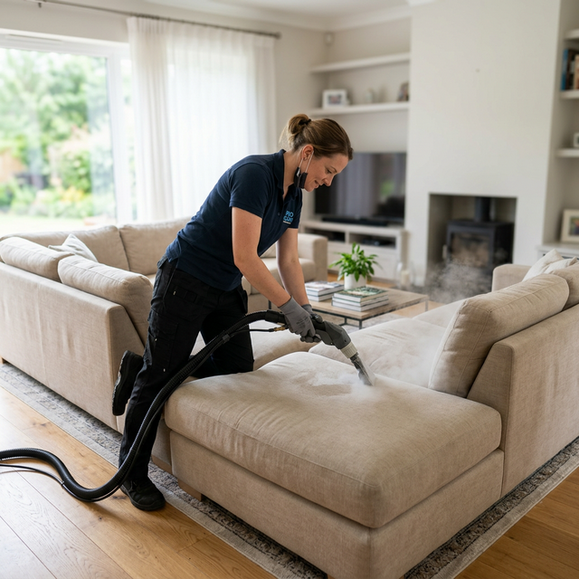
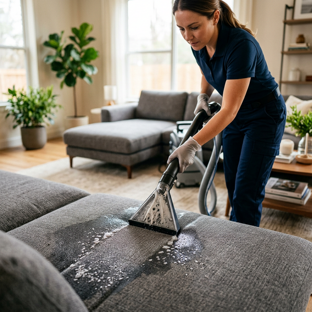

Professional Couch Cleaning Services in Melbourne
Your couch handles more daily abuse than any other piece of furniture. Whether it's an L-shaped sectional hosting movie nights, a recliner couch absorbing hours of relaxation, or a sleeper couch doubling as a guest bed — food crumbs, drink spills, pet hair, sweat, and body oils work their way deep into cushions, seams, and crevices that your vacuum simply can't reach.
At BABA Cleaning, our couch cleaning Melbourne service is built for every couch shape, size, and fabric. Using professional-grade Hot Water Extraction (HWE) technology and eco-friendly cleaning solutions, we deep-clean every cushion, armrest, backrest, and hidden crevice — flushing out years of embedded grime, neutralising odours, and destroying dust mites. Your couch will look, feel, and smell like it just came out of the showroom.


Our Step-by-Step Couch Cleaning Process
We follow a meticulous multi-step process tailored to your couch's construction and fabric type:
- Pre-inspection & fabric ID — We assess your couch's material, construction, stitching, and existing stains to plan the safest approach
- Complete dry vacuuming — All surfaces, cushions, under-cushion areas, and crevices are thoroughly vacuumed to extract loose debris and pet hair
- Spot treatment — Stubborn food, drink, and pet stains are pre-treated with professional-grade solutions to break them down before the deep clean
- Hot Water Extraction — High-temperature steam penetrates deep into the upholstery, flushing out embedded dirt, bacteria, allergens, and odour-causing residue
- Deodorising treatment — A fresh-scent neutraliser eliminates odours at the source rather than masking them
- Speed drying — We use professional air movers when needed, so your couch is dry and useable within 2–4 hours
We Clean Every Type of Couch
Couches come in all shapes, sizes, and configurations. Whatever you've got, we've cleaned it:
L-Shaped Sectional Couches
Deep clean including the corner module, chaise, and all removable cushions.
Modular & Configurable
Each modular piece cleaned individually for thorough coverage from every angle.
Recliner Couches
Head-rest, footrest, and side panel cleaning — including the mechanisms and tracks.
Sleeper / Sofa-Bed Couches
We clean the seating surface and the pull-out bed area for a fully fresh result.
Loveseats & 2-Seaters
Compact couches get the same detailed, cushion-by-cushion treatment.
Chaise Lounges
Extended seating surfaces cleaned from end to end including bolster pillows.
Couch Cleaning FAQ
Will cleaning remove pet hair and pet odours from my couch?
Absolutely. Our process starts with thorough vacuuming to remove surface pet hair, then the HWE steam extraction plus deodorising treatment eliminates embedded pet dander, bacteria, and odours from deep within the cushions and frame.
My couch has non-removable cushions — can you still clean it?
Yes! Many couches have fixed cushions and that's no problem. Our tools are designed to deep-clean attached cushions, backrests, and built-in sections just as effectively as removable ones.
How long does couch cleaning take?
A standard 3-seater couch takes about 30–50 minutes. Larger sectionals may take 60–90 minutes. Your couch will typically be dry within 2–4 hours — we can speed this up with air movers if needed.
Is the pre-treatment included in the price?
Yes — targeted stain pre-treatment is included free of charge with every couch cleaning booking. No hidden fees, no surprises.
Can you clean my couch on the weekend or after hours?
We offer flexible scheduling including weekends and after-hours appointments. Same-day bookings are available when our calendar permits — just give us a call.
Bring Your Couch Back to Life!
From food stains to pet odours, BABA Cleaning tackles every couch cleaning challenge in Melbourne. Get a free, no-obligation quote and enjoy a couch that's as clean as the day you got it.